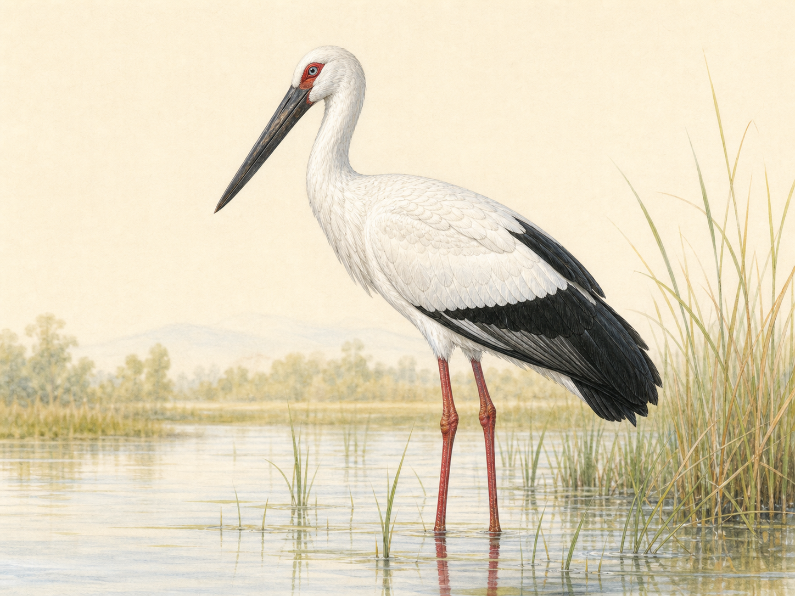

原创科普插图鹳科 · 国家一级保护动物
东方白鹳
Ciconia boyciana黑白分明的大型涉禽。四月，它正沿中国东部湿地一路北上，飞回东北平原繁殖。
本月区域华东沿海—华北湿地
下一站东北平原
CHOOSE A DIRECTION
像翻开一本会动的自然图鉴：先看迁徙全貌，再认识一只鸟。
建议用于公众科普首页
原创科普插图鹳科 · 国家一级保护动物
黑白分明的大型涉禽。四月，它正沿中国东部湿地一路北上，飞回东北平原繁殖。
REFERENCE & ASSET
照片负责证明“它真实长什么样”，插图负责统一网站气质。以下照片均为 Wikimedia Commons 开放授权素材，正式使用需保留署名和许可证。